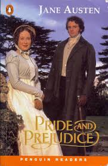

Regency drama, swoon-worthy moments, and enough misunderstandings to last a lifetime. 🎩✨
Elizabeth Bennet is smart, independent, and *not* here for anyone’s nonsense. Mr. Darcy is rich, broody, and too proud for his own good. Will they fight? Yes. Will they fall in love? Also yes. 💃🕺
✔️ One of the greatest love stories ever written 💕
✔️ Witty dialogue, romance, and plenty of *tea* ☕
✔️ Mr. Darcy’s iconic “I love you, against my better judgment” moment 😍
(If you don't pretend to be in a Regency-era drama while reading, you're doing it wrong.)
"You must allow me to tell you how ardently I admire and love you."
"I could easily forgive his pride, if he had not mortified mine."
"A lady’s imagination is very rapid; it jumps from admiration to love, from love to matrimony in a moment."